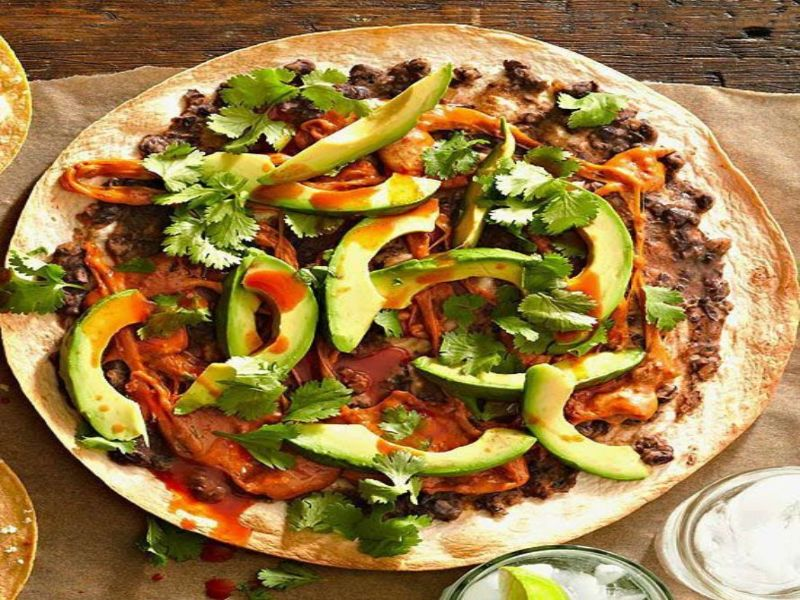

Junio 14, 2023
La base de la gastronomía mexicana es, sin duda, el maíz y el chile, los cuales datan de la época prehispánica.
Otros componentes importantes incluyen el arroz, los frijoles, el jitomate, la cebolla, el nopal, la calabaza y el cacao.
Algunos platos regionales que sobresalen como platillos típicos de la gastronomía mexicana incluyen la cochinita pibil del estado de Yucatán, el mole oaxaqueño, el mole poblano, el pozole (identificado con Sinaloa, Jalisco y Guerrero), el cabrito (identificado con Coahuila y Nuevo León) y el menudo de Sinaloa, Sonora y Chihuahua. Aunque se come carne roja en todo el país, se asocia más con los estados del norte y, por supuesto, se suele comer más pescado y mariscos en las zonas de la costa.

La Gastronomía de Querétaro, tiene platillos que le dan mucha identidad, su tradición culinaria tiene influencia de las culturas chihimeca, siempre aprovechando las bondades naturales de la zona semidesérticas del estado, por lo que sus principales ingredientes son el nopal, el maíz y el chile.
La gastronomía mexiquense son las comidas, bebidas y demás tradición culinaria del Estado de México, en México.
Por gastronomía de Yucatán se entiende específicamente la tradición culinaria del estado de Yucatán, en México, aunque en un sentido amplio sus técnicas e ingredientes con algunas variantes están inspirados en las bases de la gastronomía del sureste de México.
La gastronomía sonorense son los platos y la tradición culinaria del estado de Sonora al noroeste de México. Esta gastronomía se distingue de la del resto del país debido a que sus platillos se basan principalmente en la carne de res y sus asados en leña, en gran parte ya que la ganadería es uno de los ejes del desarrollo económico del estado.
La gastronomía veracruzana son los alimentos, técnica culinarias y platos típicos del estado de Veracruz, en el oriente de México. Ya que se encuentra bordeando el Golfo de México, los productos del mar, como pescados y mariscos, tienen mucha importancia.

La cocina oaxaqueña es una cocina regional de México, centrada en la ciudad de Oaxaca, capital del estado del mismo nombre situada en el sur de México.